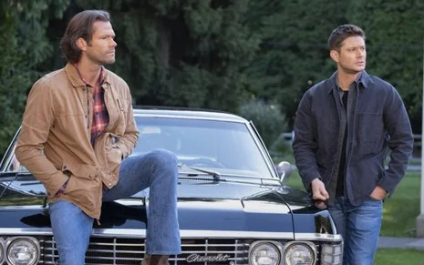
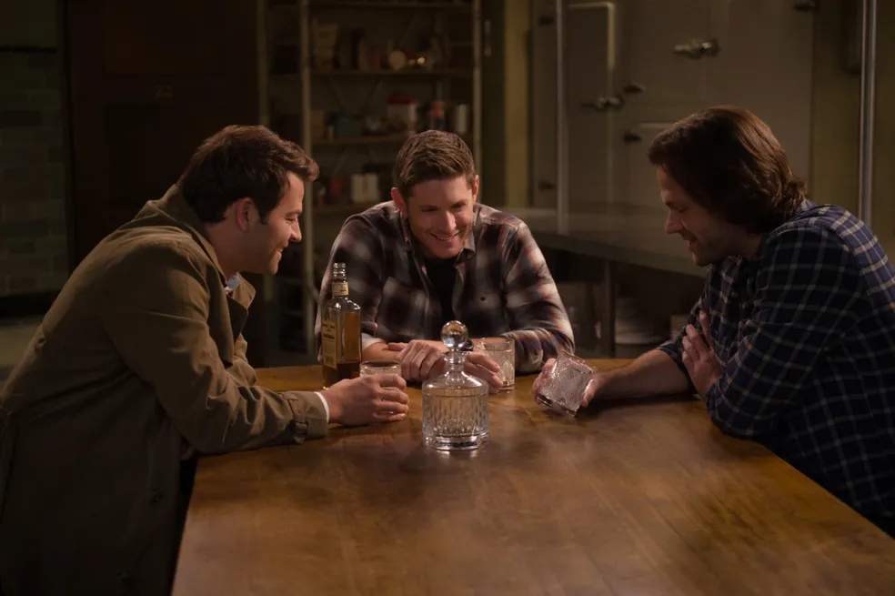

Ao longo das temporadas, "Supernatural" cativou os fãs com sua narrativa
inicialmente envolvente e mitologia intrigante. No entanto, críticos
observaram que o roteiro tende a se prolongar demais, estendendo os
arcos de história além do necessário. Isso resulta em episódios que
parecem esticados e repetitivos, diluindo o impacto emocional das tramas
e diminuindo o suspense. Embora os irmãos Winchester, Sam e Dean, sejam
amados pelos fãs, houve críticas sobre a falta de desenvolvimento
significativo de seus personagens ao longo das temporadas. Em certos
momentos, parece que os personagens estão presos em padrões de
comportamento repetitivos, sem uma verdadeira evolução ou crescimento.

"Supernatural" foi acusada de depender fortemente de fórmulas
previsíveis em sua estrutura narrativa. Muitos episódios seguem um
padrão familiar de investigação, confronto com o monstro da semana e
resolução do caso. Essa previsibilidade pode resultar em uma sensação de
falta de inovação ou originalidade, especialmente à medida que a série
avança em suas temporadas. Houve críticas sobre o desenvolvimento
inconsistente de enredos secundários e personagens coadjuvantes. Alguns
arcos narrativos foram deixados de lado ou não receberam a atenção
adequada, levando a uma sensação de desconexão e falta de coesão na
narrativa geral. Ao longo das temporadas, "Supernatural" tem sido
criticada por seu ritmo irregular. Alguns episódios podem ser mais
lentos e menos cativantes do que outros, resultando em uma experiência
de visualização desigual.

Apesar das críticas, "Supernatural" continua a ser amplamente apreciada
por uma série de motivos cativantes. Sua atmosfera única, que mescla
elementos de horror, suspense e drama sobrenatural, cria um ambiente
envolvente que mantém os espectadores intrigados e ávidos por mais. Além
disso, o humor irreverente da série proporciona momentos de alívio
cômico, equilibrando habilmente a tensão das narrativas mais sombrias.
A lealdade demonstrada pela equipe de produção e pelos próprios
protagonistas em relação aos fãs é notável. Ao longo dos anos, o elenco
e a equipe demonstraram um compromisso excepcional com a comunidade de
fãs, participando ativamente de convenções, interagindo nas redes
sociais e expressando gratidão pelo apoio contínuo dos espectadores.
O elenco carismático, liderado por Jared Padalecki e Jensen Ackles
nos papéis de Sam e Dean Winchester, desempenha um papel fundamental no
apelo duradouro da série. A química entre os atores principais e o
compromisso com seus personagens elevaram "Supernatural" a um status de
ícone na cultura pop. A longevidade da série, com suas quinze
temporadas, é verdadeiramente impressionante e testemunha sua capacidade
de se adaptar e evoluir ao longo do tempo.
Mesmo com altos e
baixos, "Supernatural" manteve uma base de fãs apaixonada e continua a
ser uma parte significativa do cenário televisivo, deixando um legado
duradouro no mundo do entretenimento. Seu impacto cultural vai além do
alcance da tela, inspirando debates, teorias e análises profundas sobre
temas como família, destino e moralidade. "Supernatural" não é apenas
uma série de televisão, mas uma experiência compartilhada que conecta
pessoas de todo o mundo através de seu amor pela narrativa e seus
personagens icônicos.